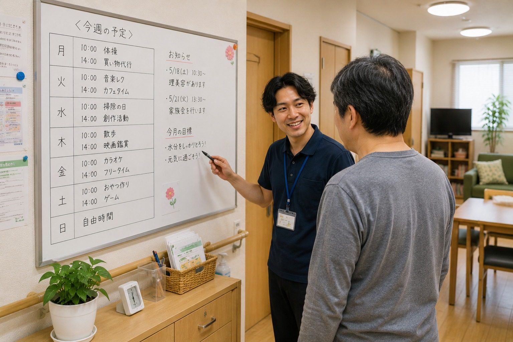

見学・ご相談の受付について、準備が整い次第こちらでご案内します。
障害者グループホーム ニコニコはうす
毎日の暮らしを、
静かに支える
グループホーム。
新座市で、障害のある方が安心して過ごせる住まいを目指しています。見学やご相談は、今の状況を伺いながら丁寧に進めます。
News
小さなお知らせ
日々の運営や見学受付について、必要なことだけを静かにお知らせします。
見学やご相談について、分かる範囲からお問い合わせいただけます。
見学時に確認したいことがある場合は、事前にお知らせください。
About
暮らしの場として、落ち着けること。
ニコニコはうすは、障害のある方が地域の中で生活するためのグループホームです。
毎日を特別に飾るのではなく、食事をして、休んで、話して、ひとりの時間も持てる。そうした普通の暮らしが続くことを大切にしています。
ご本人のペースを尊重しながら、困ったときに相談できる距離で見守ります。
一緒に食卓を囲む時間も、ひとりで落ち着く時間も、どちらもその人らしい暮らしの一部として大切にしています。
ニコニコはうすについて
ご本人

自分のペースで暮らせることを大切にします。
ご家族

不安を整理しながら相談できます。
関係機関

必要な情報を共有し、連携して支えます。
地域生活

日常の延長として、無理なく暮らします。
Care stance
声をかけすぎず、離れすぎず。
生活の場として、落ち着ける時間や距離感を大切にしています。
必要な支援は人によって違います。日々の表情、食事、睡眠、外出の様子を見ながら、ご本人にとって無理のない関わり方を考えます。
見守る
小さな変化に気づけるよう、日々の様子を丁寧に確認します。
急がせない
生活リズムや人との距離感は、少しずつ整えていきます。
つなぐ
ご家族、相談支援専門員、関係機関と必要に応じて連携します。

Atmosphere
ふだんの暮らしが、少し伝わるように。
見学前でも、どんな場所か少し想像できるように、共有スペースや生活動線の雰囲気を大切に伝えています。
Daily life
暮らしの様子
食事、居室、共有スペースなど、毎日の暮らしを想像しやすい場所を紹介しています。落ち着いて過ごせること、無理なく続けられることを大切にしています。



Support
日々の小さな困りごとを、暮らしの中で支えます。
特別な場面だけではなく、毎日の中で必要なことを一緒に確認します。

生活リズム
起床、食事、服薬、外出など、その方に合った流れを整えます。
関係機関との連携
ご本人の意思を中心に、ご家族や相談支援専門員などと必要な範囲で連携します。
安心できる距離感
必要な時に声をかけ、ひとりの時間も大切にします。
For family
ご家族の方へ
住まいを変える不安を、急がず一つずつ整理していきます。
住まいを変えることは、ご本人にとってもご家族にとっても大きな出来事です。だからこそ、すぐに結論を出すのではなく、今の生活、不安、困っていることを一つずつ伺います。
見学の段階では、入居を決める必要はありません。ご本人に合うか、生活の雰囲気が合うか、支援の距離感が合うかを一緒に確認していきます。
ご家族だけで先に相談したい場合や、相談支援専門員の方と一緒に確認したい場合も、状況に合わせて進めます。
急がない相談
入居時期が決まっていなくても、今の状況からお聞かせください。
見える暮らし
生活の様子や支援の考え方を、できるだけ分かりやすく共有します。
連携して支える
相談支援専門員や医療機関など、必要な方と連携しながら進めます。

よくある質問
よくある質問
見学だけでもできますか。
はい。入居を決める前の段階でも、雰囲気を確認していただけます。
家族だけで相談してもよいですか。
まずはご家族からのご相談でも大丈夫です。その後、ご本人の意向も確認しながら進めます。
関係機関からの相談もできますか。
相談支援専門員、医療・福祉関係者の方からのご連絡もお受けしています。
Flow
ご相談の流れ
お問い合わせ後、現在の状況やご希望を伺いながら、無理のない進め方を一緒に確認します。
- 1
お問い合わせ
- 2
現在の状況を確認
- 3
見学・面談
- 4
関係機関と相談


Contact
まずは、今の状況をお聞かせください。
見学や入居のご相談、現在の生活についての不安など、分かる範囲で大丈夫です。
すぐに決めるためではなく、これからの暮らしを一緒に整理するためのご相談としてお受けしています。
お問い合わせへお電話048-000-000
埼玉県新座市・新座駅周辺で、普通の暮らしを大切にしています。